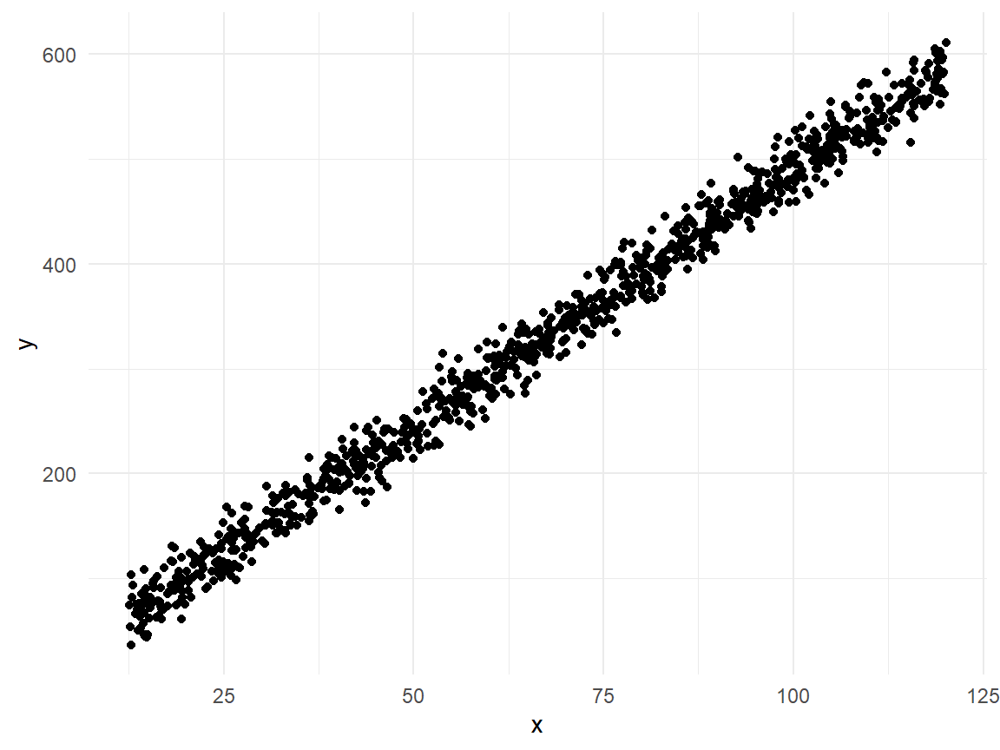
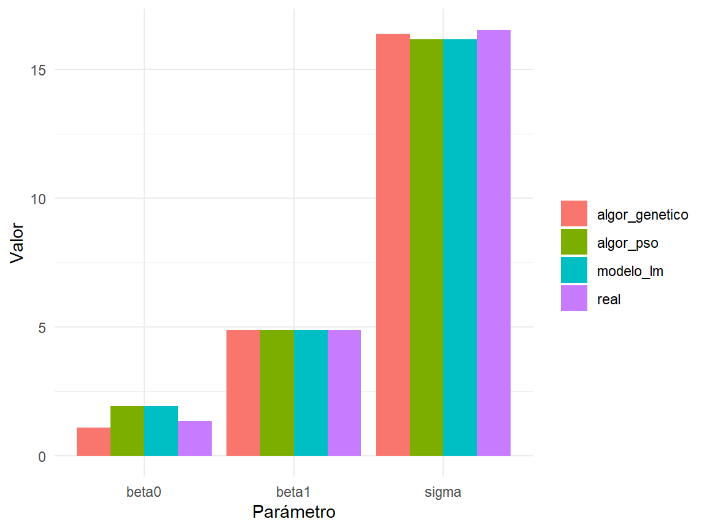

Código
library(tidyverse)
library(GA)
theme_set(theme_minimal())Regresión Lineal Simple (RLS)
library(tidyverse)
library(GA)
theme_set(theme_minimal())Para este ejemplo se simulan datos con los siguientes parámetros:
La variable predictora \(X\) es simulada con distribución de probabilidad uniforme en el rango \(12.5, 120.29\). La simulación completa puede ser expresada como se muestra a continuación:
\[ \begin{aligned} y_i \sim N(\mu, \sigma^2) \\ \mu_i = 1.345 + 4.876x_i \\ x_i \sim U(12.5, 120.29) \\ \sigma^2 = 273 \end{aligned} \]
dataRLS <- function(n, min_x, max_x, beta0, beta1, varianza) {
x = runif(n = n, min = min_x, max = max_x)
media = beta0 + beta1 * x
y = rnorm(n = n,
mean = media,
sd = sqrt(varianza))
res = tibble(y = y, x = x)
return(res)
}# Parámetros
n <- 1000
min_x <- 12.5
max_x <- 120.29
beta0 <- 1.345
beta1 <- 4.876
varianza <- 273
set.seed(2024)
df_sim1 <- dataRLS(
n = n,
min_x = min_x,
max_x = max_x,
beta0 = beta0,
beta1 = beta1,
varianza = varianza
)
df_sim1 |> head()df_sim1 |>
ggplot(aes(x = x, y = y)) +
geom_point()
mod_lineal <- lm(y ~ x, data = df_sim1)
intercepto_lm <- mod_lineal$coefficients[1]
pendiente_lm <- mod_lineal$coefficients[2]
sigma_lm <- summary(mod_lineal)$sigmafuncionFitness1 <- function(params, data) {
beta0 <- params[1]
beta1 <- params[2]
sigma <- params[3]
pred <- beta0 + beta1 * data$x
residuos <- data$y - pred
res <- sum(dnorm(
residuos,
mean = 0,
sd = sigma,
log = TRUE
))
return(res)
}
algen_logver <- ga(
type = "real-valued",
fitness = function(params) {
funcionFitness1(params = params, data = df_sim1)
},
lower = c(-500, -500, -500),
upper = c(500, 500, 500),
popSize = 100,
maxiter = 10000,
monitor = FALSE,
seed = 2024
)
param_algen_logver <- algen_logver@solution[1, ]library(pso)
objectivePSO <- function(params, data) {
beta0 <- params[1]
beta1 <- params[2]
sigma <- params[3]
pred <- beta0 + beta1 * data$x
residuos <- data$y - pred
# Negativo porque psoptim minimiza y queremos maximizar la log-verosimilitud
res <- -sum(dnorm(
residuos,
mean = 0,
sd = sigma,
log = TRUE
))
return(res)
}
resultado_pso <- psoptim(
par = c(0, 0, 1),
fn = function(params) {
objectivePSO(params = params, data = df_sim1)
},
lower = c(-500, -500, 0),
upper = c(500, 500, 500),
control = list(
maxit = 1000,
s = 10 # partículas
)
)
resultado_pso$par[1] 1.927001 4.867104 16.155774parametros <- c("beta0", "beta1", "sigma")
reales <- c(beta0, beta1, sqrt(varianza))
df_comparativo <-
tibble(
parametro = parametros,
real = reales,
modelo_lm = c(intercepto_lm, pendiente_lm, sigma_lm),
algor_genetico = param_algen_logver,
algor_pso = resultado_pso$par
)
df_comparativo |> gt::gt()| parametro | real | modelo_lm | algor_genetico | algor_pso |
|---|---|---|---|---|
| beta0 | 1.34500 | 1.927001 | 1.097820 | 1.927001 |
| beta1 | 4.87600 | 4.867104 | 4.878258 | 4.867104 |
| sigma | 16.52271 | 16.171954 | 16.377645 | 16.155774 |
df_comparativo |>
pivot_longer(cols = -parametro,
names_to = "modelo",
values_to = "valor") |>
ggplot(aes(x = parametro, y = valor, fill = modelo)) +
geom_col(position = "dodge") +
labs(fill = "", x = "Parámetro", y = "Valor")